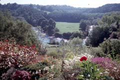
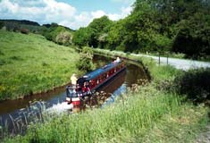
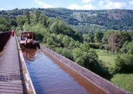
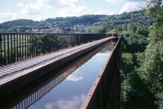
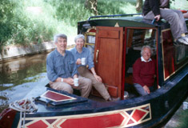
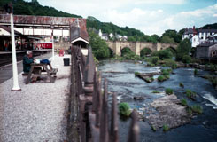

This was a short day of walking - just the morning - in order to spend some time in Llangollen. We had breakfast at Sun Cottage while sitting in their sun porch. It was an amazing view, first of flowers in the garden close by, then of the Dee, flowing in a big curve far below. We started walking, very soon going down beside the Shropshire Union canal. Just as we came down to the canal, a narrow boat appeared. This particular boat, the Dragonfly, turned out to be our companion for most of the next several hours. We walked faster than the boat speed, but we would stop to take pictures, so we averaged the same. Just before a lift-bridge, the older man on the boat got off. The three of us watched while someone cranked a big wheel to raise the bridge, and talked while waiting for his boat's turn to go through. He was from Derbyshire, between Bakewell and Matlock, an area that Thann and I knew from our time near there last spring. After just a few miles, we came to the famous thousand-foot long Pont-Cysyllte aqueduct, built by Thomas Telford about 1800. This takes the canal over the River Dee, which is 126 feet below. The canal part of the aqueduct is a cast-iron trough, about 11 feet wide, just wide enough for the narrow boats. On one side of the trough is a walkway for pedestrians. On the other side there's nothing between the boat and the drop-off to the river, far below. Walking across is not frightening, since there's a railing, but I should think it might be scary on a boat. We spent a very long time enjoying the aqueduct, watching the boats cross. On the far side, we made the choice to stay on the canal towpath for the rest of the way to Llangollen. We could have taken a higher route with longer views, but we were thoroughly enjoying the canal. After half an hour or so, we came to the Dragonfly, which had tied up for some reason. Our friends invited us to come on and have a cup of coffee. We did, and had a chance to see what the inside of a narrow boat is like. They had rented it for a week, for a family vacation. The family was a couple our age, their daughter and son-in-law (both physicians with the NHS) and the granddaughter. What great fun that was for Thann and me!
|  |  |  |
A few miles from Llangollen, we began seeing Dinas Bran up on top its hill. This is an old castle ruin, very striking when seen from far off. When we got to Llangollen, we first went to out guest house, Oakmere, owned by a likable couple, Lyndsey and Jeremy Knibbs. We then went back up to the canal for a ride in a horse-drawn boat. We had seen these rides advertised, and it sounded like a peaceful way to relax. It was the most peaceful ride we've ever been on. The horse plodded slowly along, and there was no noise at all. The part of the canal in that direction, beyond Llangollen, isn't open to other boats. The only traffic was another horse-drawn boat. We passed our Dragonfly friends as they walked on the towpath, and all waved.
We ate lunch (packaged salads from the Spar) while sitting on a picnic table in the train station. There are now excursion steam trains from here, and we saw several. The station is right beside the Dee, and the old Llangollen Bridge is near by. The bridge was built originally in the early 1100s, but has been enlarged several times since. While crossing the bridge, we saw our Dragonfly friend yet again, and had another chat! We walked up to Plas Newydd, the home of the "Ladies of Llangollen" in the late 18th century, and then went back, collected our clothes, and hit the laundromat. We had dinner at an excellent restaurant ("Robbin's Nest") recommended by Jeremy.
| Previous Day | Next Day | Home Page |